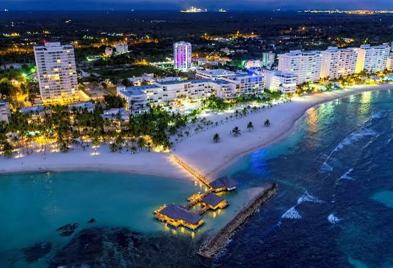

Angel De La Cruz
About Me

My name is Angel De La Cruz. I was born in the Dominican Republic. I'm currently working at a call center. In my free time, I like to watch anime and play video games.
Dominican Republic

The Dominican Republic is a beautiful country in the Caribbean. It is known for its beaches, mountains, culture, music, and delicious traditional food. The Dominican Republic has the biggest mountain on the caribbean it is called the Pico Duarte, it's also known for having an awesome flag with blue, white and red colors. The Dominican Republic is a country that has a lot of history and culture, and it is a great place to visit or live in.